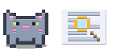
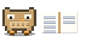
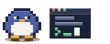
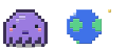

slendertoken
A coding agent for your terminal. It finishes the job on the fewest tokens, then shows what the task cost in money, energy and carbon.
curl -fsSL https://raw.githubusercontent.com/Ani07-05/slendertoken/main/install.sh | shirm https://raw.githubusercontent.com/Ani07-05/slendertoken/main/install.ps1 | iexOne command installs the app, installs and starts the Bifrost gateway, and asks for your Groq API key. Bring your own. Then run slendertoken in any repo.
Fewer tokens come from reading less.
Most of an agent's bill is the file contents and tool output it carries from turn to turn. slendertoken is built around not carrying them.
Reads a range, not a file
Files come in 100-line slices. Search stops at five hits per file. Tool output is clipped before the model sees it.
Forgets old results
Only the two most recent tool results stay in full. Older ones shrink to a stub, so they are not paid for again on every call.
Starts small, escalates when stuck
A small model works first. When a step fails, tests stay red or a tool call is rejected, the large model finishes the task.
Edits by exact match
An edit replaces one unique string and shows as a numbered diff. No rewriting whole files to change a line.
Counts what it saved
Every request is compared against a naive twin that reads whole files and resends the transcript. The gap shows live in the sidebar.
Measured against a naive agent.
Same model, same four seeded bugs, same free-tier limits, every call through Bifrost. A task counts only if pytest is green afterwards. Both agents fixed 4 of 4.
After question 1
968 tokens
naive 3,480
After question 3
4,724 tokens
naive 12,654
After question 5
9,394 tokens
naive 28,810
Question 6
12,710 tokens
naive stopped: Groq refused a 19,450-token request
One run per agent, one model, one small synthetic project, free-tier rate limits. On a paid tier the naive agent would not have crashed, it would have cost more. Read the percentages as indicative, not general. Raw numbers and the script to reproduce them are in the repo.
One command sets up the rest.
Every model call goes through Bifrost, a gateway that enforces your budget and retries on provider errors. The installer sets it up so you never open its dashboard.
Downloads slendertoken
A single binary for your system, checked against a published SHA-256 before it is installed. No Python, Node or Go.
Asks for your Groq key
Input is hidden. The key goes into a private config file in
~/.slendertokenon your machine and nowhere else. Bring your own key; you pay Groq directly.Installs and starts Bifrost
It picks a free port, writes the config with a daily budget on a virtual key, and starts the gateway in the background, bound to your machine only.
Proves it works
It sends one tiny request through the whole path. If Groq rejects the key, it says so and tells you how to fix it.
After a reboot, slendertoken starts the gateway again by itself. slendertoken bifrost status, stop and logs manage it.
Built to be trusted with a repo.
Asks before it acts
Edits and shell commands wait for your approval, shown as a diff. Switch to accept-edits or auto with shift+tab when you trust a task.
A budget that binds
A daily dollar limit on the virtual key, enforced by the gateway, plus a local backup limit per repo.
Private mode
Point it at a local Ollama model and nothing leaves your machine. Network commands in the shell are blocked too.
Asks when unsure
If a task is ambiguous, the agent asks you a multiple-choice question instead of guessing.
Looks things up
With a Tavily key it can search the web for current docs and shows the sources it used as links.
Reports its own footprint
Tokens, cost, latency, energy and carbon for every task, using the EcoLogits method. Energy and carbon are estimates, labeled as such.
A small animal keeps you company.
While it works, a pixel animal shows what the agent is doing, so a long task never looks frozen.
- Bunnythinking
- Frogediting files

Catsearching
Owlreading
Penguinrunning commands
Octopusbrowsing the web
Drawn as real images in Ghostty and kitty, and as smaller block characters in other terminals.